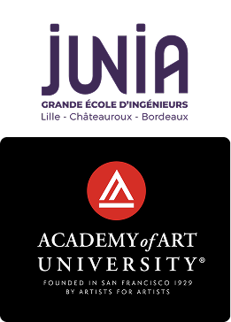

qui je suis
introduction
Je m’appelle Samy Achab. Ingenieur de formation, designer par passion, entrepreneur parce que je n’ai jamais su me contenter d’attendre qu’on me confie un projet.
Mon parcours n’a rien d’une ligne droite. Junia m’a donne la rigueur de l’ingenieur : comprendre un systeme, le decomposer, le remettre en marche. L’Academy of Art University de San Francisco m’a appris l’inverse - ecouter avant de dessiner, tester avant d’avoir raison. Un an d’Interaction & UX/UI Design dans une ville ou l’on prototype plus vite qu’on ne debat.
En parallele, je cours le 800m a haut niveau. Deux tours de piste, 1’47, aucune place pour l’approximation. Cette double identite - ingenieur et athlete - structure toute ma facon de travailler : de la discipline quand personne ne regarde, de la resilience quand le plan s’effondre, et l’obsession du detail qui fait basculer un resultat.
Curieux, je cherche en permanence a repousser les limites de ma creativite en explorant de nouveaux styles, de nouvelles tendances, de nouvelles methodes. Mon approche mele une pensee moderne et strategique a une execution concrete : des visuels et des produits a la fois beaux et reellement utiles. A travers ce portfolio, je vous invite a parcourir ce chemin entre design produit, creation graphique et expression visuelle.

contact
Formation & Parcours

Double diplome Master Entrepreneuriat
Double cursus consacre a la creation, la structuration et le developpement de mon projet entrepreneurial : IKO. Enseignements cles : strategie d’entreprise, financement de l’innovation, gestion de projet, marketing, business model
Master : Interaction & UX/UI Design
Immersion complete dans les methodes UX : recherche, comprehension des utilisateurs, conception, test. Prototypage sur Figma, entretiens utilisateurs et design iteratif. Egalement motion design et bases du front-end (HTML, CSS, JavaScript).
Diplome d’ingenieur
Specialisation materiaux et procedes textiles, avec une approche technique, environnementale et manageriale. Enseignements cles : ennoblissement et traitement textile, materiaux fibreux, gestion de la distribution textile, ressources strategiques, analyse de cycle de vie (ACV), science de la couleur, traitement de surface et enduction
Merci d’avoir pris le temps de parcourir mon travail. Je recherche aujourd’hui un CDI ou mettre mon profil hybride au service de projets qui ont du sens. Parlons design, produit, entrepreneuriat - ou simplement course a pied.